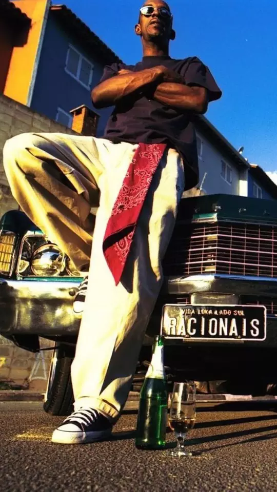
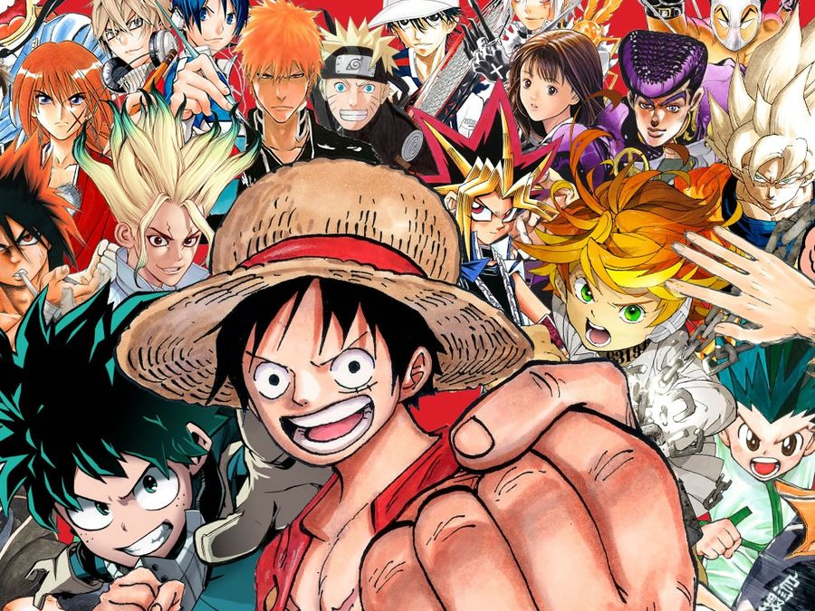
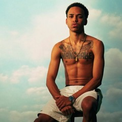
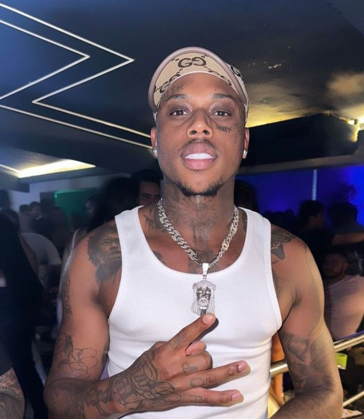
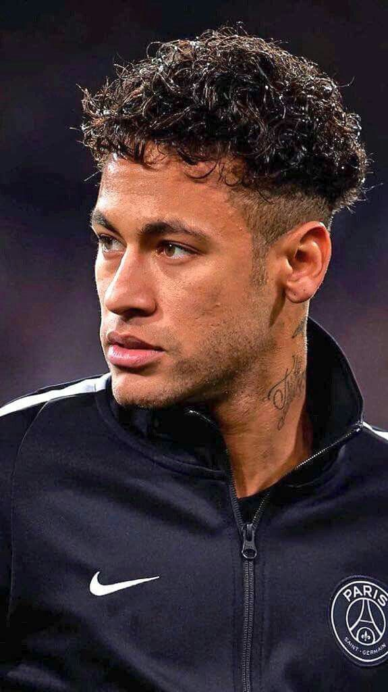
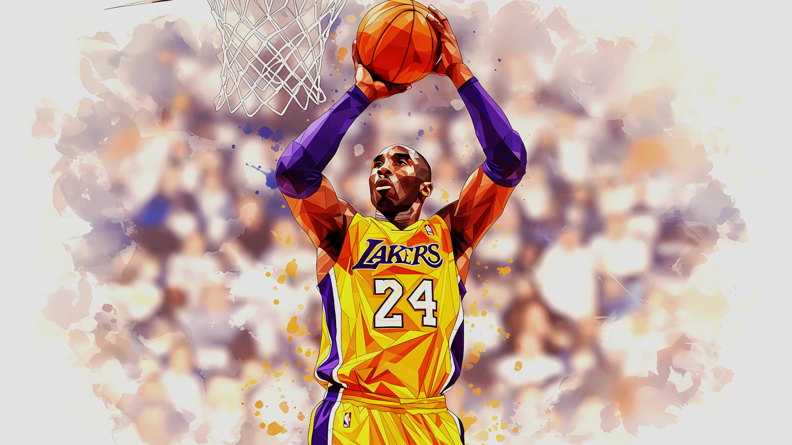

Meus Hobbies
Uma jornada visual através das paixões que inspiram minha vida e moldam minha personalidade



Minhas Inspirações

Mano Brow
Racionais Mc's

Kyan
EHXIS

Allen Iverson
NBA

Djonga
R.A.P

Dfideliz
Recayd Mob
Paixões e Ídolos





Significado
Essas imagens representam mais do que apenas entretenimento, são fontes de inspiração que moldam minha personalidade e visão de mundo. Cada cantor, atleta, esporte, clube, ou personagem de desenho acima, tem grande importância na minha vida, demonstram a representatividade e resistência, que me inspiram!